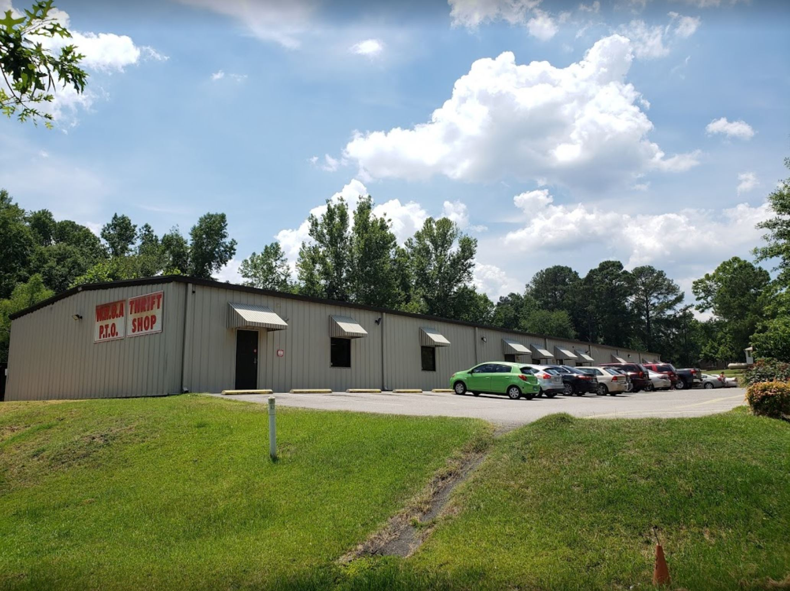
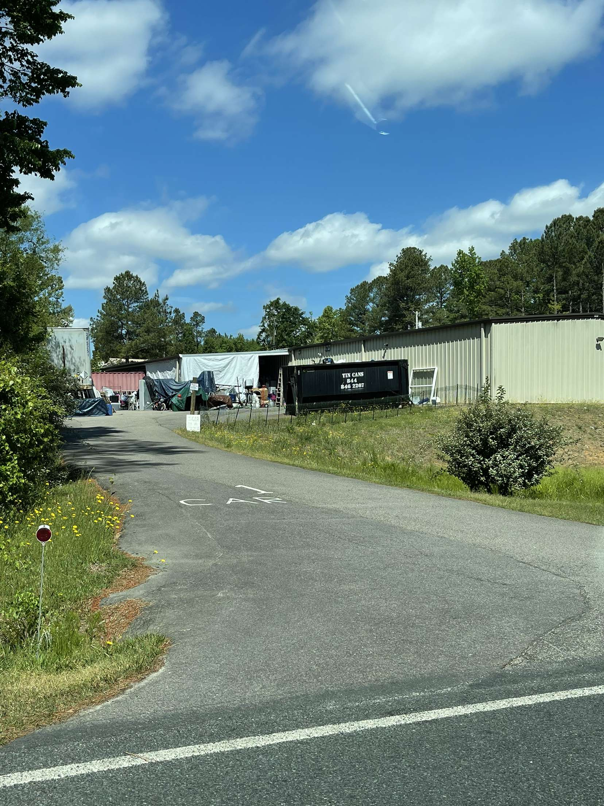

Hello and welcome to the official website of the Western Harnett Overhills Area PTO Thrift store. We are a non-profit thrift store that accepts all donations and we serve the Harnett county and surrounding areas. Feel free to drop by at any time, whether to browse our selection, to donate goods, or even just to stop by and say hello!
In order to make the donation process simple and easy, we have a single donation area out back. Simply drive up, knock on our back door, and one of our associates will be out to help receive your donation!
Below are images of our building and our donation area.
 